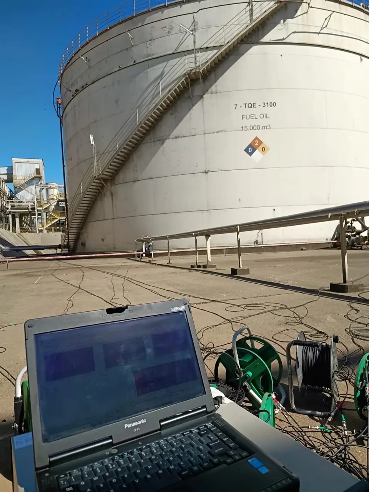
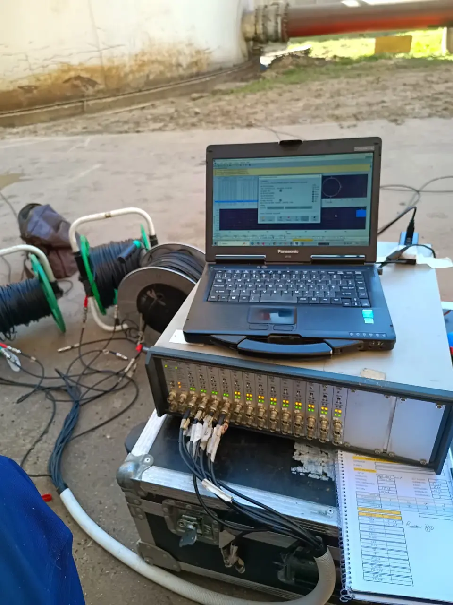
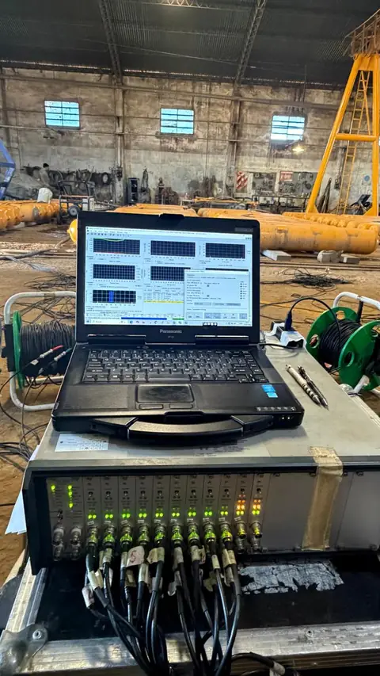
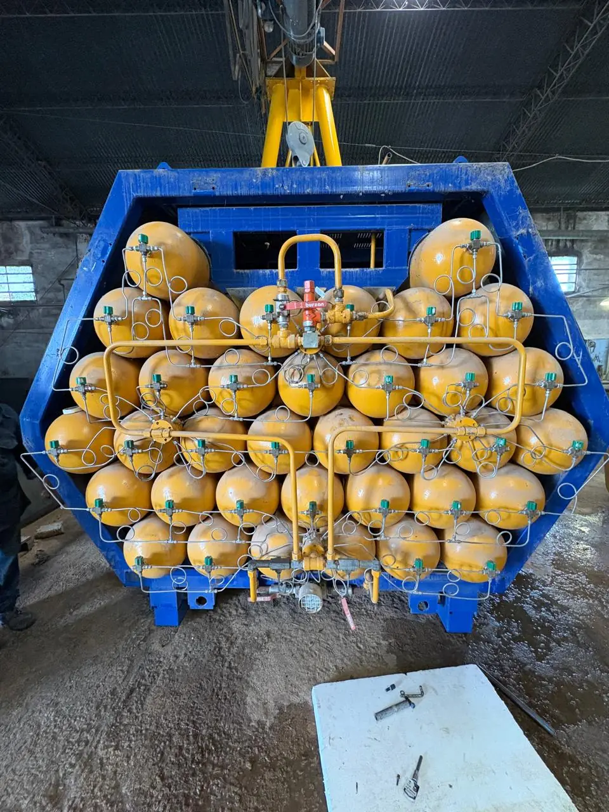
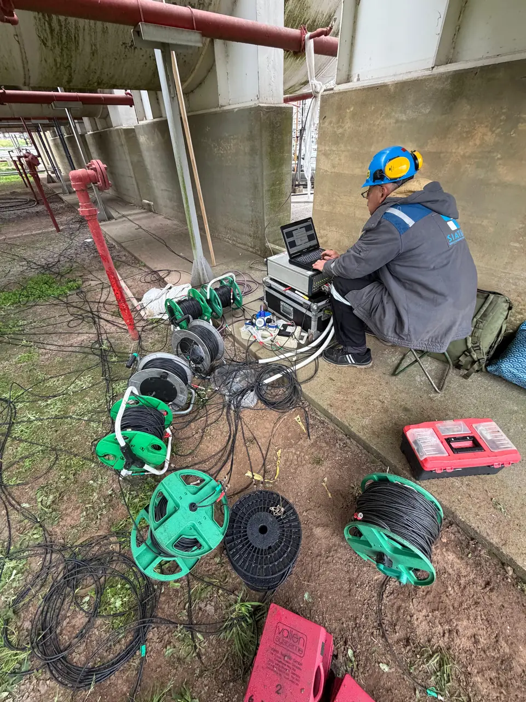
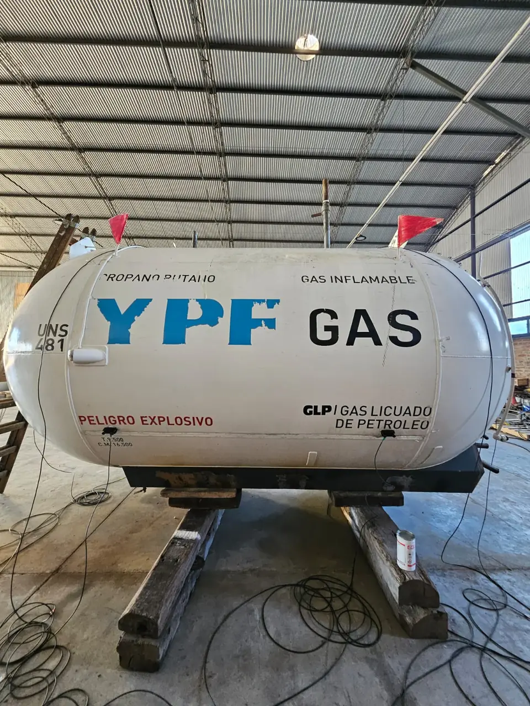

Emisión acústica (EA) en tanques y recipientes
Método no destructivo dinámico que detecta y monitorea en tiempo real las ondas de presión elástica liberadas por el material bajo esfuerzo (cargas, pruebas de presión).
- Detección de fugas, propagación de fisuras y corrosión
- Evaluación global sin vaciar ni sacar de servicio el equipo
- Personal NIVEL III y NIVEL II en EA (ISO 9712)
Integridad global sin sacar el equipo de servicio
Permite evaluar la integridad global de tanques y recipientes sin necesidad de vaciarlos completamente o sacarlos de servicio.
Personal NIVEL III y NIVEL II · ISO 9712
¿Cómo se realiza el ensayo?
[A completar]
[Descripción de la etapa]
[A completar]
[Descripción de la etapa]
[A completar]
[Descripción de la etapa]
[A completar]
[Descripción de la etapa]
¿Dónde la aplicamos?
Ensayos de emisión acústica




Lo que suelen consultarnos
¿Hay que vaciar el tanque para el ensayo?
No necesariamente: la emisión acústica permite evaluar la integridad global de tanques y recipientes sin necesidad de vaciarlos completamente o sacarlos de servicio.
¿En qué equipos se aplica?
En tanques aéreos de almacenamiento, dentro de la inspección según la Res. 277/25, y en la rehabilitación de equipos de GLP, junto con la Prueba Hidráulica.
¿Cuánto dura el ensayo?
[A completar]